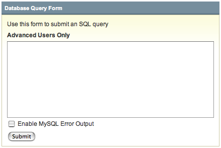

Database Query Form
Control Panel Location: Admin > Utilities > SQL Manager > SQL Query Form
This section presents a form that you can use to submit any standard database query. This feature is intended for advanced users since any changes you may make with a query are permanent.
By default MySQL query errors are disabled so that malformed queries will simply display that the query had no results. If you wish for query debugging errors to be displayed, check the "Enable MySQL Error Output" box before submitting.
